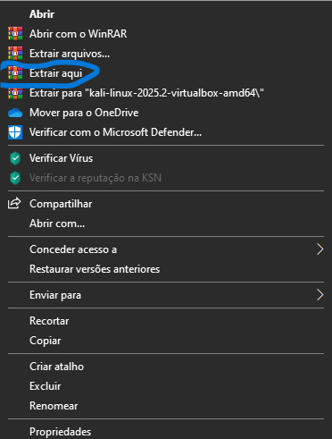
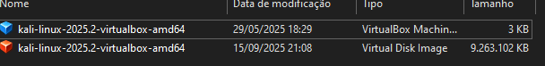

Antes de entrarmos para o hacking devemos entender o que é um sistema operacional e como ele funciona
e claro de qual sistema operacional você o futuro hacker irá usar.
Bem, vamos ser diretos, um sistema operacional é um componente intermediário que permite a comunicação
do usuário com os componentes do computador e suas funcionalidades, resumidamente é o sistema operacional que permite você
utilizar softwares (No caso a parte lógica do computador.)
Qual o Sistema Operacional irei utilizar?:
Bem, os hackers tanto black hat quanto white hat não utilizam Windows ou MacOS, aqui utilizamos Linux.
Mas qual Linux? Você pergunta e a resposta é bem simples, existe uma distro linux que serve especialmente
para testes de penetração, análise de vulnerabilidades e muitos outros testes de hacking, e ele possui um nome, ele se chama Kali Linux.
O Kali Linux é uma distro linux feita especialmente para o hacking, já que nesse sistema operacional, junto dele
vem ferramentas de hacking, como nmap, sqlmap, theHarvester e outros.
Como instalar o Kali Linux?:
Para instalar siga os passos abaixos (E sim nesse momento irei ensinar a instalar em uma virtual box)
Bem após a instalação vai aparecer a iso do Kali Linux no seu explorador de arquvios (Se caso você está no windows)
é só você extrair o arquivo, e se caso você não tem o virtual box visite este site: https://www.virtualbox.org/

Como disse antes, só extrair.

E bem após isso quando você tiver instalado o Virtual box e a ISO e após extrair a ISO irá aparecer esses 2 arquivos após extrair
clique com o botão direito em cima do arquivo azul da iso que irá aparecer uma opção de usá-lo na virtual box e você clica nela e clica em iniciar, e bem infelizmente não irei poder
mostrar a vocês por motivos que meu computador infelizmente tem Linux e não windows e essas imagens de antes era da época que eu utilizava windows,
mas como eu não quero deixar você terminar de ler isto sem aprender nada, abaixo estará um vídeo ensinando um pouco mais ou menos do que eu queria dizer.
Espero que eu tenha te ajudado, até mais visitante!
Aviso: Não recomendo que você utilize o Kali Linux como sistema operacional do dia-a-dia já que ele sempre atualiza e fica cada vez mais pesado.